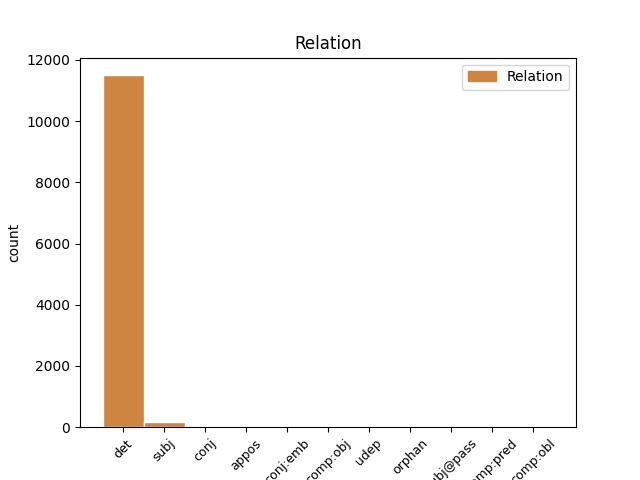
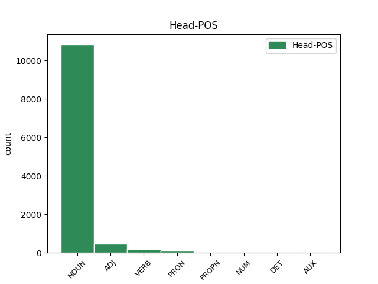
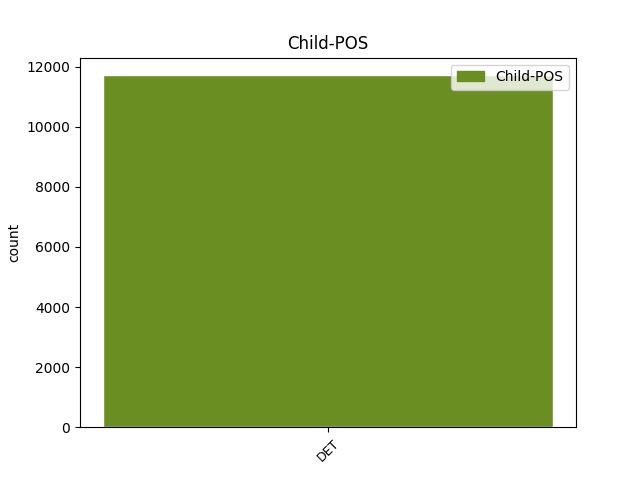

Distribution of features within this leaf



Agreement Rules sorted by frequency.
- When the dependent token is the determiner(det) of the head token, and the head token is NOUN and the dependent token is DET.
1 Strok _ _ _ _ 0 _ _ _
2 Lærarafelagið _ _ _ _ 0 _ _ _
3 Skúlablaðið _ _ _ _ 0 _ _ _
4 Bókadeildin _ _ _ _ 0 _ _ _
5 Bókaklubbin _ _ _ _ 0 _ _ _
6 Bókamiðsølan _ _ _ _ 0 _ _ _
7 Í _ _ _ _ 0 _ _ _
8 eini _ _ _ _ 0 _ _ _
9 uppgerð _ _ _ _ 0 _ _ _
10 yvir _ _ _ _ 0 _ _ _
11 læntar _ _ _ _ 0 _ _ _
12 bøkur _ _ _ _ 0 _ _ _
13 á _ _ _ _ 0 _ _ _
14 skúlabókasavninum _ _ _ _ 0 _ _ _
15 í _ _ _ _ 0 _ _ _
16 Eysturskúlanum _ _ _ _ 0 _ _ _
17 herfyri _ _ _ _ 0 _ _ _
18 , _ _ _ _ 0 _ _ _
19 vísti _ _ _ _ 0 _ _ _
20 tað _ _ _ _ 0 _ _ _
21 seg _ _ _ _ 0 _ _ _
22 , _ _ _ _ 0 _ _ _
23 at _ _ _ _ 0 _ _ _
24 helmurin _ _ _ _ 0 _ _ _
25 av _ _ _ _ 0 _ _ _
26 bókunum _ _ _ _ 0 _ _ _
27 , _ _ _ _ 0 _ _ _
28 sum _ _ _ _ 0 _ _ _
29 vórðu _ _ _ _ 0 _ _ _
30 læntar _ _ _ _ 0 _ _ _
31 út _ _ _ _ 0 _ _ _
32 ein ein DET _ Gender=Masc|Number=Sing|PronType=Art 33 det _ _
33 dag dag NOUN _ Definite=Ind|Gender=Masc|Number=Sing 0 _ _ _
34 , _ _ _ _ 0 _ _ _
35 vóru _ _ _ _ 0 _ _ _
36 krabbabøkur _ _ _ _ 0 _ _ _
37 . _ _ _ _ 0 _ _ _
1 Eitt ein DET _ Gender=Neut|Number=Sing|PronType=Art 2 det _ _
2 tilfeingsgjald tilfeingsgjald ADJ _ Definite=Ind|Gender=Neut|Number=Sing 0 _ _ _
3 er _ _ _ _ 0 _ _ _
4 at _ _ _ _ 0 _ _ _
5 meta _ _ _ _ 0 _ _ _
6 sum _ _ _ _ 0 _ _ _
7 eitt _ _ _ _ 0 _ _ _
8 gjald _ _ _ _ 0 _ _ _
9 fyri _ _ _ _ 0 _ _ _
10 at _ _ _ _ 0 _ _ _
11 sleppa _ _ _ _ 0 _ _ _
12 at _ _ _ _ 0 _ _ _
13 hjálpa _ _ _ _ 0 _ _ _
14 . _ _ _ _ 0 _ _ _
1 Og _ _ _ _ 0 _ _ _
2 so sa DET _ Case=Nom|Gender=Fem|Number=Sing 4 det _ _
3 okkurt _ _ _ _ 0 _ _ _
4 leskandi leskandi VERB _ Case=Nom|Gender=Fem|Number=Sing|Strength=Weak|Tense=Pres|VerbForm=Part|Voice=Act 0 _ _ _
5 afturvið _ _ _ _ 0 _ _ _
6 . _ _ _ _ 0 _ _ _
1 Samstundis _ _ _ _ 0 _ _ _
2 sum sums DET _ Case=Acc|Gender=Neut|Number=Sing 6 subj _ _
3 ein _ _ _ _ 0 _ _ _
4 dómsnevnd _ _ _ _ 0 _ _ _
5 hevur _ _ _ _ 0 _ _ _
6 sitið sitið VERB _ Aspect=Perf|Case=Nom|Gender=Neut|Number=Sing|Strength=Strong|Tense=Past|VerbForm=Part|Voice=Pass 0 _ _ _
7 og _ _ _ _ 0 _ _ _
8 arbeitt _ _ _ _ 0 _ _ _
9 við _ _ _ _ 0 _ _ _
10 hesum _ _ _ _ 0 _ _ _
11 , _ _ _ _ 0 _ _ _
12 hava _ _ _ _ 0 _ _ _
13 lesarar _ _ _ _ 0 _ _ _
14 eisini _ _ _ _ 0 _ _ _
15 atkvøtt _ _ _ _ 0 _ _ _
16 fyri _ _ _ _ 0 _ _ _
17 bestu _ _ _ _ 0 _ _ _
18 bókum _ _ _ _ 0 _ _ _
19 , _ _ _ _ 0 _ _ _
20 og _ _ _ _ 0 _ _ _
21 tann _ _ _ _ 0 _ _ _
22 listin _ _ _ _ 0 _ _ _
23 líkist _ _ _ _ 0 _ _ _
24 nógv _ _ _ _ 0 _ _ _
25 tí _ _ _ _ 0 _ _ _
26 hjá _ _ _ _ 0 _ _ _
27 dómsnevndini _ _ _ _ 0 _ _ _
28 , _ _ _ _ 0 _ _ _
29 hóast _ _ _ _ 0 _ _ _
30 onkur _ _ _ _ 0 _ _ _
31 frávik _ _ _ _ 0 _ _ _
32 eru _ _ _ _ 0 _ _ _
33 . _ _ _ _ 0 _ _ _
1 Ein ein DET _ Gender=Masc|Number=Sing|PronType=Art 3 det _ _
2 løta _ _ _ _ 0 _ _ _
3 sum sum PRON _ Case=Nom|Gender=Masc|Number=Sing 0 _ _ _
4 var _ _ _ _ 0 _ _ _
5 Og _ _ _ _ 0 _ _ _
6 hann _ _ _ _ 0 _ _ _
7 hevur _ _ _ _ 0 _ _ _
8 svarað _ _ _ _ 0 _ _ _
9 mær _ _ _ _ 0 _ _ _
10 : _ _ _ _ 0 _ _ _
11 " _ _ _ _ 0 _ _ _
12 Náði _ _ _ _ 0 _ _ _
13 mín _ _ _ _ 0 _ _ _
14 er _ _ _ _ 0 _ _ _
15 tær _ _ _ _ 0 _ _ _
16 nóg _ _ _ _ 0 _ _ _
17 mikið _ _ _ _ 0 _ _ _
18 ; _ _ _ _ 0 _ _ _
19 tí _ _ _ _ 0 _ _ _
20 at _ _ _ _ 0 _ _ _
21 mátturin _ _ _ _ 0 _ _ _
22 verður _ _ _ _ 0 _ _ _
23 fullkomin _ _ _ _ 0 _ _ _
24 í _ _ _ _ 0 _ _ _
25 máttloysi _ _ _ _ 0 _ _ _
26 . _ _ _ _ 0 _ _ _
27 " _ _ _ _ 0 _ _ _
1 NET _ _ _ _ 0 _ _ _
2 X _ _ _ _ 0 _ _ _
3 - _ _ _ _ 0 _ _ _
4 AspNet _ _ _ _ 0 _ _ _
5 - _ _ _ _ 0 _ _ _
6 Version _ _ _ _ 0 _ _ _
7 : _ _ _ _ 0 _ _ _
8 2.0.50727 _ _ _ _ 0 _ _ _
9 Hevur _ _ _ _ 0 _ _ _
10 tú tá DET _ Case=Acc|Gender=Fem|Number=Sing|PronType=Dem 12 det _ _
11 eina _ _ _ _ 0 _ _ _
12 NemKontu nemkonta PROPN _ Case=Acc|Gender=Fem|Number=Sing 0 _ _ _
13 ? _ _ _ _ 0 _ _ _
1 Fyri _ _ _ _ 0 _ _ _
2 allar _ _ _ _ 0 _ _ _
3 umsøkjarar _ _ _ _ 0 _ _ _
4 er _ _ _ _ 0 _ _ _
5 galdandi _ _ _ _ 0 _ _ _
6 , _ _ _ _ 0 _ _ _
7 at _ _ _ _ 0 _ _ _
8 borgarin _ _ _ _ 0 _ _ _
9 skal _ _ _ _ 0 _ _ _
10 vera _ _ _ _ 0 _ _ _
11 í _ _ _ _ 0 _ _ _
12 arbeiðsførum _ _ _ _ 0 _ _ _
13 aldri _ _ _ _ 0 _ _ _
14 , _ _ _ _ 0 _ _ _
15 og _ _ _ _ 0 _ _ _
16 hava _ _ _ _ 0 _ _ _
17 verið _ _ _ _ 0 _ _ _
18 úti _ _ _ _ 0 _ _ _
19 fyri _ _ _ _ 0 _ _ _
20 tilburði _ _ _ _ 0 _ _ _
21 , _ _ _ _ 0 _ _ _
22 sum sum DET _ Case=Acc|Gender=Neut|Number=Sing 24 subj _ _
23 hevur _ _ _ _ 0 _ _ _
24 broytt broytt ADJ _ Definite=Ind|Gender=Neut|Number=Sing|VerbForm=Part 0 _ _ _
25 førleikastøðið _ _ _ _ 0 _ _ _
26 og _ _ _ _ 0 _ _ _
27 lívsumstøðurnar _ _ _ _ 0 _ _ _
28 munandi _ _ _ _ 0 _ _ _
29 . _ _ _ _ 0 _ _ _
1 Okkara _ _ _ _ 0 _ _ _
2 andliga _ _ _ _ 0 _ _ _
3 arbeiði _ _ _ _ 0 _ _ _
4 er _ _ _ _ 0 _ _ _
5 ikki _ _ _ _ 0 _ _ _
6 skipað _ _ _ _ 0 _ _ _
7 , _ _ _ _ 0 _ _ _
8 sum _ _ _ _ 0 _ _ _
9 tað _ _ _ _ 0 _ _ _
10 var _ _ _ _ 0 _ _ _
11 í _ _ _ _ 0 _ _ _
12 ápostólskari _ _ _ _ 0 _ _ _
13 tíð _ _ _ _ 0 _ _ _
14 , _ _ _ _ 0 _ _ _
15 so sa DET _ Case=Nom|Gender=Fem|Number=Sing 16 det _ _
16 tí tí NUM _ Case=Nom|Gender=Fem|Number=Sing 0 _ _ _
17 ber _ _ _ _ 0 _ _ _
18 ikki _ _ _ _ 0 _ _ _
19 til _ _ _ _ 0 _ _ _
20 bara _ _ _ _ 0 _ _ _
21 at _ _ _ _ 0 _ _ _
22 samanbera _ _ _ _ 0 _ _ _
23 . _ _ _ _ 0 _ _ _
1 Nógv _ _ _ _ 0 _ _ _
2 av _ _ _ _ 0 _ _ _
3 hesum _ _ _ _ 0 _ _ _
4 jarðarbrúkum _ _ _ _ 0 _ _ _
5 eru _ _ _ _ 0 _ _ _
6 nú _ _ _ _ 0 _ _ _
7 lutað _ _ _ _ 0 _ _ _
8 sundur _ _ _ _ 0 _ _ _
9 og _ _ _ _ 0 _ _ _
10 einskild _ _ _ _ 0 _ _ _
11 , _ _ _ _ 0 _ _ _
12 so sa DET _ Case=Nom|Gender=Fem|Number=Sing 15 subj _ _
13 at _ _ _ _ 0 _ _ _
14 hvør _ _ _ _ 0 _ _ _
15 bóndi bóndi NOUN _ Case=Nom|Gender=Fem|Number=Sing 0 _ _ _
16 eigur _ _ _ _ 0 _ _ _
17 sín _ _ _ _ 0 _ _ _
18 garð _ _ _ _ 0 _ _ _
19 . _ _ _ _ 0 _ _ _
1 Men _ _ _ _ 0 _ _ _
2 eisini _ _ _ _ 0 _ _ _
3 var _ _ _ _ 0 _ _ _
4 ein _ _ _ _ 0 _ _ _
5 bilførari _ _ _ _ 0 _ _ _
6 eftir _ _ _ _ 0 _ _ _
7 , _ _ _ _ 0 _ _ _
8 sum _ _ _ _ 0 _ _ _
9 gott _ _ _ _ 0 _ _ _
10 nokk _ _ _ _ 0 _ _ _
11 fekk _ _ _ _ 0 _ _ _
12 sína _ _ _ _ 0 _ _ _
13 revsing _ _ _ _ 0 _ _ _
14 , _ _ _ _ 0 _ _ _
15 men _ _ _ _ 0 _ _ _
16 sum _ _ _ _ 0 _ _ _
17 restina _ _ _ _ 0 _ _ _
18 av _ _ _ _ 0 _ _ _
19 lívinum _ _ _ _ 0 _ _ _
20 mátti _ _ _ _ 0 _ _ _
21 bera _ _ _ _ 0 _ _ _
22 tað _ _ _ _ 0 _ _ _
23 byrðuna _ _ _ _ 0 _ _ _
24 tað _ _ _ _ 0 _ _ _
25 er _ _ _ _ 0 _ _ _
26 , _ _ _ _ 0 _ _ _
27 at _ _ _ _ 0 _ _ _
28 hava _ _ _ _ 0 _ _ _
29 dripið _ _ _ _ 0 _ _ _
30 eitt ein DET _ Gender=Neut|Number=Sing|PronType=Art 31 det _ _
31 annað annað DET _ Case=Acc|Gender=Neut|Number=Sing 0 _ _ _
32 menniskja _ _ _ _ 0 _ _ _
33 . _ _ _ _ 0 _ _ _
1 Hatta _ _ _ _ 0 _ _ _
2 fanboi _ _ _ _ 0 _ _ _
3 var _ _ _ _ 0 _ _ _
4 bara _ _ _ _ 0 _ _ _
5 ein _ _ _ _ 0 _ _ _
6 ábending _ _ _ _ 0 _ _ _
7 um _ _ _ _ 0 _ _ _
8 at _ _ _ _ 0 _ _ _
9 eg _ _ _ _ 0 _ _ _
10 kom _ _ _ _ 0 _ _ _
11 við _ _ _ _ 0 _ _ _
12 fanboi _ _ _ _ 0 _ _ _
13 rant _ _ _ _ 0 _ _ _
14 , _ _ _ _ 0 _ _ _
15 slettiskt _ _ _ _ 0 _ _ _
16 ikki _ _ _ _ 0 _ _ _
17 sikta _ _ _ _ 0 _ _ _
18 ímóti _ _ _ _ 0 _ _ _
19 nøkrum _ _ _ _ 0 _ _ _
20 øðrum øðrum NOUN _ Definite=Ind|Gender=Neut|Number=Plur 0 _ _ _
21 / _ _ _ _ 0 _ _ _
22 annað annað DET _ Case=Acc|Gender=Neut|Number=Sing 20 conj _ _
23 enn _ _ _ _ 0 _ _ _
24 kommentarinum _ _ _ _ 0 _ _ _
25 seinast _ _ _ _ 0 _ _ _
26 í _ _ _ _ 0 _ _ _
27 minum _ _ _ _ 0 _ _ _
28 innleggi _ _ _ _ 0 _ _ _
29 . _ _ _ _ 0 _ _ _
1 Barnagarður barnagarður NOUN _ Case=Nom|Gender=Masc|Number=Sing 0 _ _ _
2 , _ _ _ _ 0 _ _ _
3 sum sums DET _ Case=Nom|Gender=Masc|Number=Sing 1 appos _ _
4 hoyrir _ _ _ _ 0 _ _ _
5 til _ _ _ _ 0 _ _ _
6 KFUM _ _ _ _ 0 _ _ _
7 , _ _ _ _ 0 _ _ _
8 hevur _ _ _ _ 0 _ _ _
9 verið _ _ _ _ 0 _ _ _
10 í _ _ _ _ 0 _ _ _
11 kommununi _ _ _ _ 0 _ _ _
12 síðan _ _ _ _ 0 _ _ _
13 1957 _ _ _ _ 0 _ _ _
14 . _ _ _ _ 0 _ _ _
1 Jer _ _ _ _ 0 _ _ _
2 . _ _ _ _ 0 _ _ _
3 17,9 _ _ _ _ 0 _ _ _
4 Hjartað _ _ _ _ 0 _ _ _
5 og _ _ _ _ 0 _ _ _
6 kenslur _ _ _ _ 0 _ _ _
7 kunnu _ _ _ _ 0 _ _ _
8 siga _ _ _ _ 0 _ _ _
9 eitt ein DET _ Gender=Neut|Number=Sing|PronType=Art 0 _ _ _
10 í _ _ _ _ 0 _ _ _
11 dag _ _ _ _ 0 _ _ _
12 og _ _ _ _ 0 _ _ _
13 eitt _ _ _ _ 0 _ _ _
14 annað annað DET _ Definite=Ind|Gender=Neut|Number=Sing 9 conj _ _
15 um _ _ _ _ 0 _ _ _
16 nakrar _ _ _ _ 0 _ _ _
17 dagar _ _ _ _ 0 _ _ _
18 . _ _ _ _ 0 _ _ _
1 Í _ _ _ _ 0 _ _ _
2 blaðnum _ _ _ _ 0 _ _ _
3 er _ _ _ _ 0 _ _ _
4 boðan _ _ _ _ 0 _ _ _
5 , _ _ _ _ 0 _ _ _
6 vitnisburður _ _ _ _ 0 _ _ _
7 , _ _ _ _ 0 _ _ _
8 upplærandi _ _ _ _ 0 _ _ _
9 greinar _ _ _ _ 0 _ _ _
10 , _ _ _ _ 0 _ _ _
11 samrøður _ _ _ _ 0 _ _ _
12 , _ _ _ _ 0 _ _ _
13 frásagnir _ _ _ _ 0 _ _ _
14 , _ _ _ _ 0 _ _ _
15 tíðindi _ _ _ _ 0 _ _ _
16 frá _ _ _ _ 0 _ _ _
17 heimamissiónsarbeiðinum _ _ _ _ 0 _ _ _
18 og _ _ _ _ 0 _ _ _
19 kirkjuni _ _ _ _ 0 _ _ _
20 , _ _ _ _ 0 _ _ _
21 tíðindi _ _ _ _ 0 _ _ _
22 uttaneftir _ _ _ _ 0 _ _ _
23 , _ _ _ _ 0 _ _ _
24 ungdómssíður _ _ _ _ 0 _ _ _
25 , _ _ _ _ 0 _ _ _
26 bókatilfar _ _ _ _ 0 _ _ _
27 , _ _ _ _ 0 _ _ _
28 tilfar tilfar NOUN _ Definite=Ind|Gender=Neut|Number=Sing 0 _ _ _
29 til _ _ _ _ 0 _ _ _
30 eldri _ _ _ _ 0 _ _ _
31 og _ _ _ _ 0 _ _ _
32 nógv _ _ _ _ 0 _ _ _
33 annað annað DET _ Case=Nom|Gender=Neut|Number=Sing 28 conj:emb _ _
34 . _ _ _ _ 0 _ _ _
1 Mangt _ _ _ _ 0 _ _ _
2 bendir _ _ _ _ 0 _ _ _
3 á _ _ _ _ 0 _ _ _
4 , _ _ _ _ 0 _ _ _
5 at _ _ _ _ 0 _ _ _
6 landsstýrismaðurin _ _ _ _ 0 _ _ _
7 hevur _ _ _ _ 0 _ _ _
8 hug _ _ _ _ 0 _ _ _
9 at _ _ _ _ 0 _ _ _
10 hava _ _ _ _ 0 _ _ _
11 tveir _ _ _ _ 0 _ _ _
12 deplar _ _ _ _ 0 _ _ _
13 í _ _ _ _ 0 _ _ _
14 Norðoyggjum _ _ _ _ 0 _ _ _
15 , _ _ _ _ 0 _ _ _
16 ein ein PRON _ Gender=Masc|Number=Sing|PronType=Art 0 _ _ _
17 í _ _ _ _ 0 _ _ _
18 Klaksvík _ _ _ _ 0 _ _ _
19 og _ _ _ _ 0 _ _ _
20 ein ein DET _ Gender=Masc|Number=Sing|PronType=Art 16 conj _ _
21 í _ _ _ _ 0 _ _ _
22 Kambsdali _ _ _ _ 0 _ _ _
23 . _ _ _ _ 0 _ _ _
1 Tey _ _ _ _ 0 _ _ _
2 uppliva _ _ _ _ 0 _ _ _
3 ikki _ _ _ _ 0 _ _ _
4 bilin _ _ _ _ 0 _ _ _
5 sum _ _ _ _ 0 _ _ _
6 eitt _ _ _ _ 0 _ _ _
7 ábært _ _ _ _ 0 _ _ _
8 stað _ _ _ _ 0 _ _ _
9 , _ _ _ _ 0 _ _ _
10 men _ _ _ _ 0 _ _ _
11 heldur _ _ _ _ 0 _ _ _
12 sum _ _ _ _ 0 _ _ _
13 eitt ein DET _ Definite=Ind|Gender=Neut|Number=Sing|PronType=Prs 14 comp:obj _ _
14 frístað frístan VERB _ Case=Acc|Gender=Neut|Number=Sing 0 _ _ _
15 , _ _ _ _ 0 _ _ _
16 har _ _ _ _ 0 _ _ _
17 tey _ _ _ _ 0 _ _ _
18 hava _ _ _ _ 0 _ _ _
19 tíð _ _ _ _ 0 _ _ _
20 og _ _ _ _ 0 _ _ _
21 rúm _ _ _ _ 0 _ _ _
22 bara _ _ _ _ 0 _ _ _
23 vera _ _ _ _ 0 _ _ _
24 seg _ _ _ _ 0 _ _ _
25 sjálvi _ _ _ _ 0 _ _ _
26 . _ _ _ _ 0 _ _ _
1 Stk _ _ _ _ 0 _ _ _
2 . _ _ _ _ 0 _ _ _
3 3 _ _ _ _ 0 _ _ _
4 . _ _ _ _ 0 _ _ _
5 Tað _ _ _ _ 0 _ _ _
6 er _ _ _ _ 0 _ _ _
7 forboðið _ _ _ _ 0 _ _ _
8 uttan _ _ _ _ 0 _ _ _
9 loyvi _ _ _ _ 0 _ _ _
10 frá _ _ _ _ 0 _ _ _
11 landsstýrinum _ _ _ _ 0 _ _ _
12 at _ _ _ _ 0 _ _ _
13 gera _ _ _ _ 0 _ _ _
14 ella _ _ _ _ 0 _ _ _
15 evna _ _ _ _ 0 _ _ _
16 til _ _ _ _ 0 _ _ _
17 amboð _ _ _ _ 0 _ _ _
18 og _ _ _ _ 0 _ _ _
19 tilfar _ _ _ _ 0 _ _ _
20 sum sums DET _ Case=Acc|Gender=Neut|Number=Sing 21 udep _ _
21 tilskilað tilskilað ADJ _ Definite=Ind|Gender=Neut|Number=Sing|VerbForm=Part 0 _ _ _
22 í _ _ _ _ 0 _ _ _
23 stk _ _ _ _ 0 _ _ _
24 . _ _ _ _ 0 _ _ _
25 1 _ _ _ _ 0 _ _ _
26 og _ _ _ _ 0 _ _ _
27 2 _ _ _ _ 0 _ _ _
28 . _ _ _ _ 0 _ _ _
29 Undir _ _ _ _ 0 _ _ _
30 somu _ _ _ _ 0 _ _ _
31 reglurnar _ _ _ _ 0 _ _ _
32 kemur _ _ _ _ 0 _ _ _
33 gerð _ _ _ _ 0 _ _ _
34 av _ _ _ _ 0 _ _ _
35 føstum _ _ _ _ 0 _ _ _
36 tilfari _ _ _ _ 0 _ _ _
37 , _ _ _ _ 0 _ _ _
38 veskum _ _ _ _ 0 _ _ _
39 ella _ _ _ _ 0 _ _ _
40 luftevnum _ _ _ _ 0 _ _ _
41 , _ _ _ _ 0 _ _ _
42 sum _ _ _ _ 0 _ _ _
43 við _ _ _ _ 0 _ _ _
44 spjaðing _ _ _ _ 0 _ _ _
45 elvir _ _ _ _ 0 _ _ _
46 skaða _ _ _ _ 0 _ _ _
47 sum _ _ _ _ 0 _ _ _
48 doyvandi _ _ _ _ 0 _ _ _
49 ella _ _ _ _ 0 _ _ _
50 ørkymlandi _ _ _ _ 0 _ _ _
51 . _ _ _ _ 0 _ _ _
1 Vit _ _ _ _ 0 _ _ _
2 heittu _ _ _ _ 0 _ _ _
3 ikki _ _ _ _ 0 _ _ _
4 á _ _ _ _ 0 _ _ _
5 landsmyndugleikararnar _ _ _ _ 0 _ _ _
6 at _ _ _ _ 0 _ _ _
7 leggja _ _ _ _ 0 _ _ _
8 okkum _ _ _ _ 0 _ _ _
9 og _ _ _ _ 0 _ _ _
10 Kvívíkar _ _ _ _ 0 _ _ _
11 kommunu _ _ _ _ 0 _ _ _
12 saman _ _ _ _ 0 _ _ _
13 alt _ _ _ _ 0 _ _ _
14 fyri fyri NOUN _ Definite=Ind|Gender=Neut|Number=Sing 0 _ _ _
15 eitt ein DET _ Gender=Neut|Number=Sing|PronType=Art 14 comp:obj _ _
16 , _ _ _ _ 0 _ _ _
17 men _ _ _ _ 0 _ _ _
18 vit _ _ _ _ 0 _ _ _
19 valdu _ _ _ _ 0 _ _ _
20 at _ _ _ _ 0 _ _ _
21 vísa _ _ _ _ 0 _ _ _
22 á _ _ _ _ 0 _ _ _
23 , _ _ _ _ 0 _ _ _
24 hvørji _ _ _ _ 0 _ _ _
25 kommunueind _ _ _ _ 0 _ _ _
26 , _ _ _ _ 0 _ _ _
27 vit _ _ _ _ 0 _ _ _
28 vilja _ _ _ _ 0 _ _ _
29 verða _ _ _ _ 0 _ _ _
30 partur _ _ _ _ 0 _ _ _
31 av _ _ _ _ 0 _ _ _
32 , _ _ _ _ 0 _ _ _
33 um _ _ _ _ 0 _ _ _
34 tilmælið _ _ _ _ 0 _ _ _
35 í _ _ _ _ 0 _ _ _
36 kommunuálitinum _ _ _ _ 0 _ _ _
37 verður _ _ _ _ 0 _ _ _
38 fylgt _ _ _ _ 0 _ _ _
39 . _ _ _ _ 0 _ _ _
1 Virkið _ _ _ _ 0 _ _ _
2 hevur _ _ _ _ 0 _ _ _
3 keypt keype ADJ _ Definite=Ind|Gender=Neut|Number=Sing|VerbForm=Part 0 _ _ _
4 eitt ein DET _ Gender=Neut|Number=Sing|PronType=Art 3 comp:obj _ _
5 .. _ _ _ _ 0 _ _ _
1 Tað _ _ _ _ 0 _ _ _
2 almenna _ _ _ _ 0 _ _ _
3 eigur _ _ _ _ 0 _ _ _
4 tí _ _ _ _ 0 _ _ _
5 at _ _ _ _ 0 _ _ _
6 binda _ _ _ _ 0 _ _ _
7 seg _ _ _ _ 0 _ _ _
8 til _ _ _ _ 0 _ _ _
9 , _ _ _ _ 0 _ _ _
10 at _ _ _ _ 0 _ _ _
11 pedagogiskur _ _ _ _ 0 _ _ _
12 stuðul _ _ _ _ 0 _ _ _
13 fylgir _ _ _ _ 0 _ _ _
14 við _ _ _ _ 0 _ _ _
15 tí _ _ _ _ 0 _ _ _
16 stuðlinum _ _ _ _ 0 _ _ _
17 , _ _ _ _ 0 _ _ _
18 sum sums DET _ Case=Nom|Gender=Neut|Number=Sing 20 subj@pass _ _
19 verður _ _ _ _ 0 _ _ _
20 játtaður játtaður VERB _ Aspect=Perf|Case=Nom|Gender=Neut|Number=Sing|Strength=Strong|Tense=Past|VerbForm=Part|Voice=Pass 0 _ _ _
21 til _ _ _ _ 0 _ _ _
22 byggingina _ _ _ _ 0 _ _ _
23 . _ _ _ _ 0 _ _ _
1 Síðan _ _ _ _ 0 _ _ _
2 avgerð _ _ _ _ 0 _ _ _
3 varð _ _ _ _ 0 _ _ _
4 tikin _ _ _ _ 0 _ _ _
5 um _ _ _ _ 0 _ _ _
6 at _ _ _ _ 0 _ _ _
7 byggja _ _ _ _ 0 _ _ _
8 ein _ _ _ _ 0 _ _ _
9 skúladepil _ _ _ _ 0 _ _ _
10 í _ _ _ _ 0 _ _ _
11 Havn _ _ _ _ 0 _ _ _
12 hevur _ _ _ _ 0 _ _ _
13 tað _ _ _ _ 0 _ _ _
14 ligið _ _ _ _ 0 _ _ _
15 í _ _ _ _ 0 _ _ _
16 kortunum _ _ _ _ 0 _ _ _
17 , _ _ _ _ 0 _ _ _
18 at _ _ _ _ 0 _ _ _
19 vit _ _ _ _ 0 _ _ _
20 skulu _ _ _ _ 0 _ _ _
21 hava _ _ _ _ 0 _ _ _
22 tríggjar _ _ _ _ 0 _ _ _
23 miðnámsskúladeplar _ _ _ _ 0 _ _ _
24 í _ _ _ _ 0 _ _ _
25 landinum _ _ _ _ 0 _ _ _
26 , _ _ _ _ 0 _ _ _
27 ein ein PRON _ Gender=Masc|Number=Sing|PronType=Art 0 _ _ _
28 í _ _ _ _ 0 _ _ _
29 Suðuroy _ _ _ _ 0 _ _ _
30 , _ _ _ _ 0 _ _ _
31 ein _ _ _ _ 0 _ _ _
32 í _ _ _ _ 0 _ _ _
33 Havn _ _ _ _ 0 _ _ _
34 og _ _ _ _ 0 _ _ _
35 ein ein DET _ Gender=Masc|Number=Sing|PronType=Art 27 conj:emb _ _
36 í _ _ _ _ 0 _ _ _
37 Norðurøkinum _ _ _ _ 0 _ _ _
38 . _ _ _ _ 0 _ _ _
1 Eg _ _ _ _ 0 _ _ _
2 fekk _ _ _ _ 0 _ _ _
3 20 _ _ _ _ 0 _ _ _
4 aftursvar _ _ _ _ 0 _ _ _
5 , _ _ _ _ 0 _ _ _
6 eingin eingin DET _ Gender=Masc|Number=Sing|PronType=Art 7 det _ _
7 vildi vildi AUX _ Definite=Ind|Gender=Masc|Number=Sing 0 _ _ _
8 seta _ _ _ _ 0 _ _ _
9 meg _ _ _ _ 0 _ _ _
10 í _ _ _ _ 0 _ _ _
11 starv _ _ _ _ 0 _ _ _
12 . _ _ _ _ 0 _ _ _
Disagree Examples:
1 Kommunan _ _ _ _ 0 _ _ _
2 hevur _ _ _ _ 0 _ _ _
3 keypt _ _ _ _ 0 _ _ _
4 jørðina _ _ _ _ 0 _ _ _
5 undir _ _ _ _ 0 _ _ _
6 Kongavarða _ _ _ _ 0 _ _ _
7 aftur _ _ _ _ 0 _ _ _
8 og _ _ _ _ 0 _ _ _
9 hevur _ _ _ _ 0 _ _ _
10 nú _ _ _ _ 0 _ _ _
11 samtykt _ _ _ _ 0 _ _ _
12 at _ _ _ _ 0 _ _ _
13 bjóða _ _ _ _ 0 _ _ _
14 grundøkið _ _ _ _ 0 _ _ _
15 til _ _ _ _ 0 _ _ _
16 eini eini DET _ Gender=Masc|Number=Sing|PronType=Art 18 det _ _
17 30 _ _ _ _ 0 _ _ _
18 raðhús raðhús NOUN _ Definite=Ind|Gender=Neut|Number=Plur 0 _ _ _
19 út _ _ _ _ 0 _ _ _
20 fyri _ _ _ _ 0 _ _ _
21 hægstbjóðandi _ _ _ _ 0 _ _ _
22 . _ _ _ _ 0 _ _ _
1 Har _ _ _ _ 0 _ _ _
2 er _ _ _ _ 0 _ _ _
3 eisini _ _ _ _ 0 _ _ _
4 eitt _ _ _ _ 0 _ _ _
5 tað _ _ _ _ 0 _ _ _
6 strálbygdasta _ _ _ _ 0 _ _ _
7 landið _ _ _ _ 0 _ _ _
8 í _ _ _ _ 0 _ _ _
9 verðini _ _ _ _ 0 _ _ _
10 , _ _ _ _ 0 _ _ _
11 Summastaðni _ _ _ _ 0 _ _ _
12 í _ _ _ _ 0 _ _ _
13 Asia _ _ _ _ 0 _ _ _
14 er _ _ _ _ 0 _ _ _
15 altíð _ _ _ _ 0 _ _ _
16 heitt _ _ _ _ 0 _ _ _
17 , _ _ _ _ 0 _ _ _
18 men _ _ _ _ 0 _ _ _
19 har _ _ _ _ 0 _ _ _
20 eru _ _ _ _ 0 _ _ _
21 eisini _ _ _ _ 0 _ _ _
22 tey _ _ _ _ 0 _ _ _
23 kaldastu _ _ _ _ 0 _ _ _
24 plássini _ _ _ _ 0 _ _ _
25 á _ _ _ _ 0 _ _ _
26 allari allar DET _ Case=Dat|Gender=Fem|Number=Sing 27 det _ _
27 jørðini jørðii NOUN _ Case=Dat|Gender=Neut|Number=Sing 0 _ _ _
28 . _ _ _ _ 0 _ _ _
1 Økisferðavinnufeløgini _ _ _ _ 0 _ _ _
2 , _ _ _ _ 0 _ _ _
3 sum sums DET _ Case=Nom|Gender=Neut|Number=Sing 6 det _ _
4 fáa _ _ _ _ 0 _ _ _
5 fíggjarligan _ _ _ _ 0 _ _ _
6 stuðul stuðuls NOUN _ Case=Acc|Gender=Masc|Number=Sing 0 _ _ _
7 úr _ _ _ _ 0 _ _ _
8 Uttanríkisráðnum _ _ _ _ 0 _ _ _
9 reka _ _ _ _ 0 _ _ _
10 kunningarstovurnar _ _ _ _ 0 _ _ _
11 , _ _ _ _ 0 _ _ _
12 ið _ _ _ _ 0 _ _ _
13 gera _ _ _ _ 0 _ _ _
14 eitt _ _ _ _ 0 _ _ _
15 megnar _ _ _ _ 0 _ _ _
16 arbeiðið _ _ _ _ 0 _ _ _
17 fyri _ _ _ _ 0 _ _ _
18 ferðavinnuna _ _ _ _ 0 _ _ _
19 . _ _ _ _ 0 _ _ _
1 Tað _ _ _ _ 0 _ _ _
2 er _ _ _ _ 0 _ _ _
3 helst _ _ _ _ 0 _ _ _
4 frásagnir _ _ _ _ 0 _ _ _
5 og _ _ _ _ 0 _ _ _
6 myndir _ _ _ _ 0 _ _ _
7 frá _ _ _ _ 0 _ _ _
8 G!-Festivalinum _ _ _ _ 0 _ _ _
9 sum sums DET _ Case=Acc|Gender=Neut|Number=Sing 12 det _ _
10 hava _ _ _ _ 0 _ _ _
11 fingið _ _ _ _ 0 _ _ _
12 fólk fólk NOUN _ Case=Acc|Gender=Fem|Number=Sing 0 _ _ _
13 til _ _ _ _ 0 _ _ _
14 planet _ _ _ _ 0 _ _ _
15 . _ _ _ _ 0 _ _ _
1 Millióningurin _ _ _ _ 0 _ _ _
2 heldur _ _ _ _ 0 _ _ _
3 uppá _ _ _ _ 0 _ _ _
4 , _ _ _ _ 0 _ _ _
5 at _ _ _ _ 0 _ _ _
6 ferðin _ _ _ _ 0 _ _ _
7 er _ _ _ _ 0 _ _ _
8 ein ein DET _ Gender=Masc|Number=Sing|PronType=Art 9 det _ _
9 misskiljing misskiljing NOUN _ Definite=Ind|Gender=Fem|Number=Sing 0 _ _ _
10 . _ _ _ _ 0 _ _ _
11 30/1 _ _ _ _ 0 _ _ _
12 - _ _ _ _ 0 _ _ _
13 15 _ _ _ _ 0 _ _ _
14 Ferðslurelatera _ _ _ _ 0 _ _ _
15 fyrstuhjálparskeið _ _ _ _ 0 _ _ _
16 Ferðslurelatera _ _ _ _ 0 _ _ _
17 fyrstuhjálparskeið _ _ _ _ 0 _ _ _
18 verður _ _ _ _ 0 _ _ _
19 30 _ _ _ _ 0 _ _ _
20 og _ _ _ _ 0 _ _ _
21 31 _ _ _ _ 0 _ _ _
22 januar _ _ _ _ 0 _ _ _
23 . _ _ _ _ 0 _ _ _